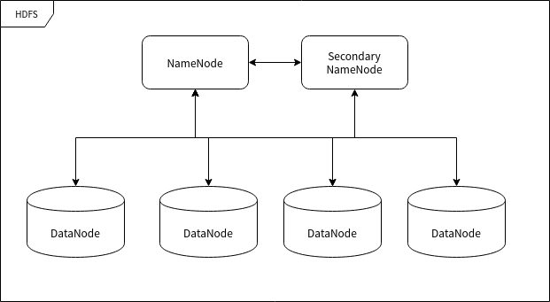

Este capítulo se centra en presentar los conceptos y componentes de Hadoop. Es un capítulo teórico. Si tienes prisa, puedes omitirlo. Pero el autor no recomienda omitirlo, porque está estrechamente relacionado con los capítulos posteriores.
Diseño general de Hadoop
El framework de Hadoop es un framework para el procesamiento de big data en clústeres de computadoras, por lo que debe ser un software que pueda desplegarse en múltiples computadoras. Los hosts con el software Hadoop desplegado se comunican entre sí a través de sockets (red).
Hadoop incluye principalmente dos componentes principales: HDFS y MapReduce. HDFS se encarga del almacenamiento distribuido de datos, mientras que MapReduce se encarga del mapeo, la reducción y la agregación de los resultados del procesamiento de datos.
El principio más fundamental del framework Hadoop es utilizar una gran cantidad de computadoras para operar simultáneamente y acelerar la velocidad de procesamiento de grandes volúmenes de datos. Por ejemplo, una empresa de motores de búsqueda, para filtrar y resumir palabras populares a partir de billones de datos no reducidos, necesita organizar una gran cantidad de computadoras en un clúster para procesar esta información. Si se utilizara una base de datos tradicional para procesarla, llevaría mucho tiempo y requeriría un gran espacio de procesamiento. Esta magnitud es difícil de lograr para cualquier computadora individual; la principal dificultad radica en organizar una gran cantidad de hardware e integrarlo rápidamente en una sola computadora, e incluso si se lograra, generaría costos de mantenimiento elevados.
Hadoop puede ejecutarse en hasta varios miles de computadoras económicas de producción masiva y organizarlas en un clúster de computadoras.
Un clúster de Hadoop puede almacenar datos de manera eficiente y asignar tareas de procesamiento, lo que aporta muchos beneficios. En primer lugar, reduce los costos de construcción y mantenimiento de las computadoras. En segundo lugar, si alguna computadora presenta una falla de hardware, no causará un impacto fatal en todo el sistema informático, porque el framework de clúster desarrollado para la capa de aplicación debe asumir por sí mismo que las computadoras pueden fallar.
HDFS
Hadoop Distributed File System, el sistema de archivos distribuido de Hadoop, abreviado como HDFS.
HDFS se utiliza para almacenar archivos en el clúster. La idea central que emplea es la idea de GFS de Google y puede almacenar archivos muy grandes.
En un clúster de servidores, el almacenamiento de archivos suele requerir eficiencia y estabilidad; HDFS logra ambas ventajas al mismo tiempo.
El almacenamiento eficiente de HDFS se logra mediante el procesamiento independiente de solicitudes por parte del clúster de computadoras. Porque cuando un usuario (generalmente programas de backend) envía una solicitud de almacenamiento de datos, a menudo el servidor de respuesta está procesando otras solicitudes, lo cual es la causa principal de la lentitud del servicio. Pero si el servidor de respuesta asigna directamente un servidor de datos al usuario y luego el usuario interactúa directamente con ese servidor de datos, la eficiencia es mucho mayor.
La estabilidad del almacenamiento de datos suele lograrse mediante el método de 'guardar varias copias'; HDFS también utiliza este método. La unidad de almacenamiento de HDFS es el bloque (Block). Un archivo puede dividirse en múltiples bloques almacenados en la memoria física. Por lo tanto, HDFS suele replicar los bloques de datos n veces según los requisitos del configurador y los almacena en diferentes nodos de datos (servidores que almacenan datos). Si un nodo de datos falla, los datos no se pierden.
Nodos de HDFS
HDFS se ejecuta en muchas computadoras diferentes. Algunas computadoras están dedicadas a almacenar datos y otras a dirigir a otras computadoras para que almacenen datos. A estas 'computadoras' las podemos llamar nodos del clúster.
Nodo de nombre (NameNode)
El nodo de nombre (NameNode) es el nodo que se utiliza para dirigir el almacenamiento de otros nodos. Cualquier 'sistema de archivos' (File System, FS) necesita poder mapear archivos según la ruta del archivo. El NameNode es la computadora que se utiliza para almacenar esta información de mapeo y proporcionar el servicio de mapeo; desempeña el papel de 'administrador' en todo el sistema HDFS. Por lo tanto, un clúster HDFS tiene solo un nodo de nombre.
Nodo de datos (DataNode)
El nodo de datos (DataNode) es el nodo que se utiliza para almacenar bloques de datos. Una vez que un archivo es reconocido y dividido en bloques por el nodo de nombre, se almacena en los nodos de datos asignados. El nodo de datos tiene la función de almacenar y leer/escribir datos. Los bloques de datos almacenados son similares al concepto de 'sectores' en un disco duro y son la unidad básica de almacenamiento de HDFS.
Nodo de nombre secundario (Secondary NameNode)
El nodo de nombre secundario (Secondary NameNode), también llamado 'nodo de nombre secundario', es el 'secretario' del nodo de nombre. Esta descripción es muy adecuada, porque no puede reemplazar el trabajo del nodo de nombre, independientemente de si el nodo de nombre es capaz de seguir trabajando. Se encarga principalmente de aliviar la presión del nodo de nombre, respaldar el estado del nodo de nombre y realizar algunas tareas de administración, si el nodo de nombre se lo solicita. Si el nodo de nombre se daña, también puede proporcionar datos de respaldo para recuperarlo. Puede haber múltiples nodos de nombre secundarios.

MapReduce
El significado de MapReduce es tan obvio como su nombre: Map y Reduce (mapeo y reducción).
Procesamiento de big data
El procesamiento de grandes volúmenes de datos es un típico caso de 'lógica simple, implementación compleja'. La razón por la que la implementación es compleja es principalmente porque, al usar métodos tradicionales, el procesamiento de grandes volúmenes de datos causa insuficiencia de recursos de hardware (principalmente memoria).
Ahora tenemos un texto (en un entorno real, esta cadena puede tener una longitud de 1 PB o incluso más). Realizamos un simple recuento de 'contar caracteres', es decir, contar la cantidad de veces que aparece cada carácter en este texto:
AABABCABCDABCDE
El resultado después del recuento debería ser:
| Carácter | Cantidad de apariciones |
|---|---|
| A | 5 |
| B | 4 |
| C | 3 |
| D | 2 |
| E | 1 |
El proceso de recuento es en realidad muy simple: cada vez que se lee un carácter, se debe comprobar si ya existe el mismo carácter en la tabla. Si no existe, se añade un registro y se establece el valor del registro en 1; si existe, simplemente se incrementa el valor del registro en 1.
Pero si cambiamos el objeto de recuento de 'caracteres' a 'palabras', el tamaño de la muestra se vuelve enormemente grande, hasta el punto de que una sola computadora difícilmente podría contar las 'palabras' utilizadas por miles de millones de usuarios durante un año.
En este caso, todavía tenemos formas de completar esta tarea: primero dividimos la muestra en segmentos que una sola computadora pueda procesar, luego contamos segmento por segmento. Después de cada conteo, realizamos una reducción de los resultados del mapeo, es decir, fusionamos los resultados del recuento en un resultado de datos más grande. Finalmente, podemos completar la reducción de datos a gran escala.
En el caso anterior, el trabajo de organización de la primera fase es el 'mapeo': clasificar y organizar los datos. Hasta aquí, podemos obtener un resultado mucho más pequeño que los datos de origen. El trabajo de la segunda fase generalmente lo realiza el clúster. Después de organizar los datos, necesitamos hacer una agregación general de estos datos, ya que es posible que los resultados de mapeo de múltiples nodos tengan categorías superpuestas. En este proceso, los resultados del mapeo se condensarán aún más en resultados estadísticos utilizables.
Concepto de MapReduce
Encontré un artículo sobre MapReduce en el sitio web de IBM, en la dirección:https://www.ibm.com/analytics/hadoop/mapreduce. Ahora voy a adaptar un caso de procesamiento de MapReduce de ese artículo para presentar los detalles del principio de MapReduce y los conceptos relacionados.
Este es un ejemplo de MapReduce muy simple. No importa cuántos datos se necesiten analizar, los principios clave son los mismos.
Supongamos que hay 5 archivos, cada uno con dos columnas que registran el nombre de una ciudad y la temperatura correspondiente registrada en diferentes fechas de medición para esa ciudad. El nombre de la ciudad es la clave (Key) y la temperatura es el valor (Value). Por ejemplo: (Xiamen, 20). Ahora queremos encontrar la temperatura máxima de cada ciudad en todos los datos (ten en cuenta que la misma ciudad puede aparecer en varios archivos).
Con el framework MapReduce, podemos dividirlo en 5 tareas de mapeo, donde cada tarea se encarga de procesar uno de los cinco archivos. Cada tarea de mapeo examina cada dato del archivo y devuelve la temperatura máxima de cada ciudad en ese archivo.
Por ejemplo, para los siguientes datos:
| Ciudad | Temperatura |
|---|---|
| Xiamen | 12 |
| Shanghái | 34 |
| Xiamen | 20 |
| Shanghái | 15 |
| Pekín | 14 |
| Pekín | 16 |
| Xiamen | 24 |
El resultado producido por una tarea de mapeo con los datos anteriores es el siguiente:
| Ciudad | Temperatura máxima |
|---|---|
| Xiamen | 24 |
| Shanghái | 34 |
| Pekín | 16 |
Supongamos que las otras cuatro tareas de los mapeadores producen los siguientes resultados:
| Ciudad | Temperatura máxima |
|---|---|
| Xiamen | 17 |
| Hangzhou | 25 |
| Shanghái | 29 |
| Pekín | 36 |
| Xiamen | 30 |
| Hangzhou | 17 |
| Shanghái | 31 |
| Pekín | 35 |
| Xiamen | 18 |
| Hangzhou | 17 |
| Shanghái | 17 |
| Pekín | 27 |
| Xiamen | 28 |
| Hangzhou | 18 |
| Shanghái | 14 |
| Pekín | 27 |
Los 5 resultados se pasarán a la tarea Reduce, que combina los resultados de entrada y genera un único valor para cada ciudad, produciendo el resultado final siguiente:
| Ciudad | Temperatura máxima |
|---|---|
| Xiamen | 30 |
| Shanghái | 34 |
| Pekín | 36 |
| Hangzhou | 25 |
Por ejemplo, puedes imaginar MapReduce como un censo de población: la oficina del censo envía varios encuestadores a cada ciudad. Cada encuestador en cada ciudad contará una parte de la población de esa ciudad y luego enviará los resultados de vuelta a la capital. En la capital, los resultados de cada ciudad se reducen a un solo recuento (la población de cada ciudad) y luego se puede determinar la población total del país. Este mapeo de personas a ciudades se realiza en paralelo y luego se combinan los resultados (Reduce). Esto es mucho más eficiente que enviar a una persona a contar a cada persona del país de forma secuencial.